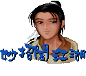

[妙招闯江湖]

[玩友留言版]

[仙剑公布栏]

[奇文共欣赏]
问：(1997年6月30日 下午02:39)
请问：魅影神靴在哪里？
答：(1997年7月01日 下午 06:10)
以下摘自五月份灵儿答客问：
据不愿意透露姓名的程式姚壮宪表示，他赶工
赶昏了头，居然在游戏出了之后，才知道忘了
放魅影神靴，灵儿为他这种不负责任的行为，
感到十分抱歉。
问：(1997年6月29日 下午11:44)
请问如果有仙剑二的消息,会不会马上在网上公布?
小钧
答：(1997年7月01日 下午 06:10)
当然会啊！
问：(1997年6月29日 下午02:56)
我是一直希望主角的图片能够是彩色的ㄝ, 因为这样比较好看嘛!!
ok??
答：(1997年7月01日 下午 06:15)
是啊！那样我们的人生就是彩色的了！
问：(1997年6月28日 上午01:24)
仙剑奇侠传 saturn 版何时出现 ?
我一定会去买原版的~ 记得要支援中文嘿~ 不然双语版更好啦~
让日本见识仙剑的魅力~ ckck..
ps: 有无考虑出类似樱花大战的限定版包装 ?
答：(1997年6月28日 下午 05:55)
出片事宜仍在研议当中。
问：(1997年6月27日 上午11:20)
逍遥十五级则可练成万剑诀,
我同学却要二十五级才可练
到,这是为何?是他的有问题
还是我的有问题?
烦请转交蛇姐姐灵灵 Thanks
答：(1997年6月28日 下午 05:55)
逍遥哥练成万剑诀时是十五级没错，
您确定您同学二十五级才可练成？
问：(1997年6月27日 上午09:20)
请问美丽可爱的灵儿姐姐:
请问你第一个问题.
仙剑光碟版不是可以听音乐,可是第一首好像没有声音耶...??
要从第二首才有声音.
第二个问题..
可怜的灵儿姐姐.好多人都问你有关SS的问题,........虽然如此.....
我还是要问.....呵......SS版的仙剑在台湾开始发售了吗?????
还有,那个小只的漫画型的人物好可爱好可爱
好可爱好可爱好可爱好可爱好可爱哟 ~~~~~~~
怎么办．．．．我爱上他们了．．．．
一颗可爱的糖果：）
答：(1997年6月28日 下午 06:30)
1.游戏光碟的第一轨是程式部份，当然没有声音啊！
2.SS版的仙剑还未在全球任何一个地方发售！
问：(1997年6月27日 上午09:17)
仙剑3及仙剑外传是否正在企划中?
它们会否紧随着仙剑2推出?
仙剑迷上
答：(1997年6月28日 下午 06:43)
仙剑二正在企划中，仙剑三及仙剑
外传目前不敢想。
问：(1997年6月26日 下午03:12)
每当玩仙剑奇侠传时,储存后欲离开游戏时,
隔日欲续玩时总会发现李逍遥经验值归零,
而等级不变,其他的人经验值及等级不变,怎么办?
方法:最好的办法是等李逍遥等级上升时再存
就可以了!!（这样就不必浪费很多经验了）
答：(1997年6月28日 下午 06:05)
很抱歉！这是最早的游戏版本才存在
的错误，请您至公司首页的快速服务
专区，从FTP DOWNLOAD区中取得更
新档，便能解决逍遥哥经验值被漏存
的问题了。
问：(1997年6月25日 上午01:51)
小灵儿:
请问仙剑二会在何时推出?
本人觉得仙剑一有以下缺点,希望在仙剑二得以改善!
一.没有自动绘图功能.
二.地图太过繁复,虽然落手落脚行果个唔系我,但系
我都有D脚仔软呀阴公.
三.物品栏没有自动分类功能,真系巨识我我唔识巨.
四.敌方没有体力显示,所以我每次用紫金葫芦果阵
时都惊惊地,你都咪话唔牙烟!
希望续集可以再见到你!
对你魂牵梦萦的逍遥大哥
答：(1997年6月28日 下午 06:25)
多谢您宝贵的意见，仙剑二的推出还须要很长
的一段时间，敬请耐心等待。
问：(1997年6月24日 下午06:07)
请问逍遥剧场不知为何写经营不善而关闭......
我觉得写的非常好而且也有让读者有想再
玩一次的感受. 不知所为何?
读者甲 上
答：(1997年6月28日 下午 06:25)
请至仙剑公布栏一观，便知分晓！
问：(1997年6月22日 下午 03:33)
为什么我在隐龙窟的村子里拿不到鲤鱼肝？
pal迷 留
答：(1997年6月23日 下午 06:15)
那是白河村！您必须先到渔夫的屋中，
向他借钓竿，再到河边有鲤鱼的地方垂
钓（凸出河面的一小截木桥上），将鲤
鱼交给药僮即可。
问：(1997年6月22日 下午 03:33)
灵儿蛇女大姐:
为什么我十五级时您可练成风卷?
我买到盗版的吗?
并祝你和逍遥哥有好结果!
三十级就没法术练的可怜虫
答：(1997年6月23日 下午 06:15)
十五级练成风卷残云很正常啊！
怎会是盗版呢？都是灵儿资质不
佳，只会那几种法术，真是对不
起您了！
问：(1997年6月20日 下午 07:19)
请问漂漂的灵儿:
仙剑里有一个招式or武器叫做"天雷破妖剑"的吗?
我很喜欢仙剑,破关n次了,仍然没看到这样东西,如果有,那要如何拿到呢?
答：(1997年6月21日 下午 03:02)
有天剑、天雷破等法术，并没有招式或武器叫做【天雷破妖剑】的，
恐怕是有人晃点您。
问：(1997年6月20日 下午 09:31)
请问包装品的封面及海报上的男女是不是逍遥哥和灵儿姐呢?
Lucy
答：(1997年6月21日 下午 02:59)
还会是谁呢？当然是我们两个人啊！
问：(1997年6月21日 上午 01:00)
仙剑SS版是否在日本与台湾将同时发行
,预定1997年内发售??
在"次世代游戏站"看到的..
http://www.twnic.net/contest/winner/week40/news.htm
有图为证哦....
答：(1997年6月21日 下午 02:57)
原则上是如此，细节还没敲定。
问：(1997年6月20日 上午 10:55)
灵儿姐 你好！
请问“仙剑奇侠传” 的英文茗字为甚么叫作 “pal” 呢？
来自新加坡的朋友，
心怡
答：(1997年6月20日 下午 06:30)
武士Paladin的缩写，制作游戏时暂用的目录名，
后来就没改了，并没有特别的含意，也称不上是
仙剑的英文名字。
问：(1997年6月18日 上午 11:18)
能不能也移植到ps上呢?
答：(1997年6月19日 下午 06:45)
上个月也有人提相同的问题，答案是不会。
问：(1997年6月18日 下午 05:27)
灵儿姊姊你好!
我住在香港的,但因为这里的翻版风气太强劲啦!
我身为仙剑Fans,好怕到SS版发售时会买不到正版啊!
所以我有些少问题:
1.SS版仙剑在香港会有代理吗?
2.售价已决定了吗?
3.游戏会否附送Poster之类的东西?
多谢回答!Bye~Bye!
【 雅迪·华路沙武 】
答：(1997年6月19日 下午 06:32)
1.当然有香港代理啊。
2.未定。
3.还没决定耶！
问：(1997年6月18日 下午 05:37)
灵儿和巫后娘娘头上的红点是什么标记啊？
姥姥为什么可以变身为蛇呢？
水灵珠
答：(1997年6月19日 下午 06:25)
1.那是我们女娲族的标记。
2.幻术，吓唬逍遥哥罢了。
问：(1997年6月18日 下午 04:40)
在尚书府左边的卫兵手里拿到的情书
拿给阿香后拿到玉佩再跟右边的卫兵
讲话之后怎么办??????????????????
答：(1997年6月18日 下午 01:20)
将玉佩交给他。
问：(1997年6月17日 上午 10:13)
亲爱的灵儿姐姐:
那仙剑2的进度如何呢??
又....大概那时会出呀??
答：(1997年6月17日 上午 10:55)
最高机密！您也太性急了，请稍安勿躁！
问：(1997年6月16日 下午 10:35)
嗨灵儿:
SS仙剑英文版里
的人物名字会用
拼音,还是用真的洋名哦?
Adrian
答：(1997年6月17日 上午 10:45)
都有耶！
问：(1997年6月16日 下午 08:06)
Morning.....
不知道你们是不是还记得,在很早以前,我曾经发E-Mail给你们,
跟你们问有关仙剑的图档怎么解,但是你们说技术不能公开,
所以不能告诉我,我也回信说我会努力的破解的,and now,
I will tell you : 我已经解开了!! and 也请不要担心,
我不会把他外流或是用来作别的用途.
Bye......
=========================================
无尽相思无尽秋
无限家人却白头
心碎挥别无情郎
归隐天山泪不流
白发魔X留
答：(1997年6月17日 上午 10:45)
恭喜您功力再上一层楼。
问：(1997年6月15日 下午 05:55)
有一天在书店看到"陈淑芬"的画集,仔细研就一番,
好像有分3,4集,还没弄清楚时,便感到一股充满杀
气的视线,原来这些画集是不能乱碰的,店员在瞪我,
请问一下,这些画集之中有没有收录仙剑的封面??
是整本的还是一张一张(因为它写"复制画")
我想去扫瞄一下.
另外,陈淑芬老师和你们熟吗??她有在玩网路吗??
有她的E-Mail吗??可以介绍给我认识吗???
Death Origin
答：(1997年6月17日 上午 10:30)
陈淑芬老师的画集并没有收录仙剑的封面。
我们跟她还算熟，平常以电话连络，不知道
她的E-Mail，她有没有在玩网路，可不可以
介绍给您认识，我今天再问她。
问：(1997年6月14日 下午 08:53)
1.大嫂, 你们有没有想到在网页上放所有仙剑的音乐 (Midi)?
2.我想在仙剑内用"游戏修改大师"可是内存不够, 怎么办?
3.在仙剑2内, 可否将一些"儿童不宜"的东西删去?
陈自在
答：(1997年6月17日 上午 10:20)
1.想放部分上去！但小组网页负责人蛮笨的，他不会放！
2.请询问该软件出版商。
3.也就是说将我的戏删掉，可以啊！没问题！
问：(1997年6月13日 上午 11:30)
请问可不可以用你们仙剑的人物来做网页呢?
答：(1997年6月13日 下午 06:20)
以下摘自五月份的狂徒答客问：
问：狂徒创作群,
我是一名仙剑迷, 正准备架构有关「仙剑奇侠传」的网页,
请问可以转载贵工作室上图片吗?
深感敬佩的呆子佳人
答：感谢您对仙剑奇侠传的支持！若您已经架设
网站，请将您的网址告诉我们，我们会看您
的网站的性质，是否符合我们的基本要求，
（如不可有色情、侵犯著作权等内容）再决
定是否授权。
若您还未开始架设，请您将网站的性质、风
格、大概内容以及个人资料告诉我们，我们
再决定授权与否。
目前仅【媐舲舫】得到本公司的授权，您可
以进入【玩友架设的仙剑网站】与他们连系
，询问过程，希望早日看到您的网页喔。
问：(1997年6月13日 上午 01:09)
您好:
我是"仙剑"的爱用者, 想请教的是,
为何我上媐舲舫网页时,所有文字部份皆为乱码?
谅谅!!
恐龙 '97.6.13
答：(1997年6月13日 下午 06:16)
以下是媐舲舫的回答：
麻烦刊登一下,本坊要Netscape才能看中文,
我敢保证他们一定是用IE看.
Death Origin
问：(1997年6月13日 上午 12:34)
为什么?仙剑在SS上会是日文?中文就无法抬头吗?
就因"太7"是日文让我头大,台湾就没有中文版?
答：(1997年6月13日 下午 06:09)
请看六月十一日的回答。
问：(1997年6月13日 上午 12:26)
请问仙剑SS版什么时候出呢?
答：(1997年6月13日 下午 06:05)
赶工中，还未确定。
问：(1997年6月12日 下午 07:01)
HI！灵儿姑娘你好！
请问两个问题
1.大宇有没有计划做些仙剑的布景主题放在站上呢？
2.以后会不会在出一套SS仙剑的PC版本？宿舍里实在没地方玩saturn，
我又不愿「放过」仙剑之最新版本(没鱼，虾也好)，谁叫仙剑二不赶快出，
唉.................
望穿秋水的orion
答：(1997年6月13日 下午 06:00)
1.目前没有计划。
2.不会。
问：(1997年6月12日 上午 10:03)
很多人都不喜欢仙剑二又是一个悲剧结尾,
但我却不同,我倒希望再悲一点,像哈姆雷
特,天鹅湖一样,来个爱情宇宙超级大悲剧
最好名字也悲一点,像泪儿还是什么的....
所谓悲到最高点,心中有仙剑...
yohoho~~~~~~~~~~~~~~~~
ps.请问一下,ss版的是不是中英日三语在
一片啊?最好是在一片,那我还可以买来送
人,所谓自用送人二相宜嘛
ps2.以 object oriented 的技术应该不难吧.
答：(1997年6月12日 下午 01:40)
因为市场区隔及中国人某种高超的“技术”，
所以不考虑将中英日三语放在一片。
问：(1997年6月12日 上午 05:11)
我称呼忆如为妹妹是因为我称呼您为姊姊是客气话.
如果我真是逍遥哥哥的拜把兄弟的话, 我就该叫您大嫂啦!
但是如果真有逍遥哥哥这样的英雄大哥, 实是高兴的紧.
好, 皇天在上, 后土在下, 弟子陈自在行年十二, 今与逍遥大侠结为兄弟,
不是同年同月同日生, 但愿同年同月同日死(咚, 咚, 咚, 咚, 咚, 咚, 咚, 咚).
大哥, 大嫂!
这里是"仙剑狂徒答客问", 不问个问题实在过意不去, 好,
请问音乐在那里?
音乐在那里?
陈自在
p.s.(逍遥自在)
答：(1997年6月12日 上午 12:00)
自在二弟，本来我公公的名字也想取名为自在喔！
您的问题我不解其意，您是希望网页上可听到音乐吗？
问：(1997年6月10日 上午 07:25)
Hello!!!! I have some questions on the 仙 剑 奇 侠 传
I have seen the game's "DEMO" few days ago!!( I have
this game, this game is realy great!!!! I love it!!!) On the
DEMO I saw a picture is fighting with the 剑 圣 ,but
when I was playing the game I can't fight with him ,why??
should I do any special things ??? or ......... can you
answer me please!!!!!and thank you!!!!
Kevin Lin
from Canada
答：(1997年6月11日 上午 10:50)
那不是剑圣，那是蜀山派的太师叔。
问：(1997年6月9日 上午 06:45)
SS版的仙剑会不会出中文版？
还有，在台湾的销售权是大宇的吗？
如果在台湾是大宇销售的话，我一定会买原版的！
如果还要再从日本进口的话，我就.......
还有，你们有在日本的电玩杂志上出现吗？
如果没有充份的宣传，可能不会太成功吧，
感觉敦煌就是这样，
你们应该跟日本的厂商一样，每隔一两个月就去放放风
我是很想看到台湾的软件能成功打进日本市场，
加油吧！
答：(1997年6月11日 上午 10:30)
当然会有中文版了，在台湾的销售权是大宇的。
如果是从日本进口，大宇来销售，您就不会买了吗？
近期在日本的宣传即将展开。
问：(1997年6月9日 下午 06:27)
1.用在仙剑奇侠传2内, 可不可以采用自由地图行动方式?
2.仙剑奇侠传能不能出漫画? 我有一个朋友的哥哥画漫画出神入化.
陈自在再上
答：(1997年6月11日 上午 10:30)
1.可能吧。
2.目前狂徒创作群正在招募新兵，也需要漫画长才，您可以告诉您的朋友的哥哥。
问：(1997年6月9日 下午 06:04)
1.在仙剑奇侠传2里面, 有没有打算让姜婉儿还是什么来着的再次出现?
2.仙剑奇侠传2的魔王会不会是拜月教主与水魔兽?
3.在仙剑奇侠传2里面, 您会不会再次出现? 我总是希望您和逍遥大哥能够拥有美好的结局.
4.在仙剑奇侠传2里面, 您和逍遥大哥与林姐姐和阿奴姐姐会学到更新的法术吗?
一刚开始就很强了吗?忆如妹子会出来吗?主角还是逍遥大哥吗?
5.在仙剑奇侠传2里面, 我能够用林天南, 剑圣, 与酒剑仙吗?
6.主角会是忆如妹子吗?
7.要怎么在Windows 95里面用正版的MS-Dos呢?
陈自在敬上
答：(1997年6月11日 上午 10:10)
1.秘密，您喜欢这个角色吗？
2.秘密，您要再打一次吗？
3.秘密，谢谢您。
4.秘密，活到老学到老。
5.秘密，别折腾三位老前辈了。
6.秘密，称呼我姊姊，她应该是您侄女。
7.灵儿不懂这个耶，请参阅Windows 95书籍，或e-mail到大宇资讯服务信箱询问。
问：(1997年6月8日 上午 09:34)
请问一下喔!!
仙剑SS版OP动画会采用TRUEMOTION,CPK or SOFTDEC
还是采用GAMEARTS新开发出来的东西....
答：(1997年6月11日 上午 10:00)
TRUEMOTION，以及其他的方法。
问：(1997年6月6日 下午 08:42)
当你们的等级已经60以上了,还会学到新的MAGIC吗???????????????????????????????????
(若灵儿不懂English,可以去查dictionary)
Ruey-Ke Wu
答：(1997年6月10日 下午 06:50)
我们会的就那几种把戏，再多就没有了！！
问：1997年6月4日 上午 10:02)
看了SS版的仙剑,(左下角那张)..
推测已经完成的差不多了.....^_^
现在可以确定推出日期了吗?
喜欢仙剑的杰)
ps:日文汉字的部分如果加上平假名就更完美了!!
(因为年纪小的日本小孩可能看不懂汉字..)
不过那可是一个浩大工程耶....)
答：(1997年6月5日 上午 00:20)
完成度号称"90%"，这又是无责任企划谢崇辉说的！
问：(1997年6月3日 下午 01:47)
呜~~呜~~灵儿小姐.二代还看得到你吗??
小石头@
答：(1997年6月5日 上午 00:25)
极力争取中！！
问：(1997年6月3日 下午 07:47)
蜀山派的太师叔是跟魔教女妖相恋而造成悲剧，
怎么跟逍遥有点像，又请问这里的魔教是指那一
个
答：(1997年6月5日 上午 00:10)
灵儿可不是魔教女妖！游戏中也从未提及魔教二
字喔！
问：(1997年6月3日 上午 10:34)
仙剑有无金手指密码？
答：(1997年6月3日 下午 18:30)
灵儿只听过一阳指跟气剑指，没听过金手指。
问：(1997年6月3日 上午 10:03)
Hi!Is there any password
for仙剑 ??? Answer me quick!!
儿儿
答：(1997年6月3日 下午 18:30)
磁片版密码附在说明书封面里。
问：(1997年5月31日 下午 01:45)
为何在媐舲舫首页看不到中文....只有一堆乱码???
而其它地方都很正常呢????
答：(1997年6月2日 下午 18:45)
灵儿刚刚去看，都很正常啊！或许您可以直接
跟他们反映！
[电脑答录机]
|  [妙招闯江湖] |
[玩友留言版] |
[仙剑公布栏] |
[奇文共欣赏] |
著作权声明：本站文字、图形、音效、影像等档案，非经同意，